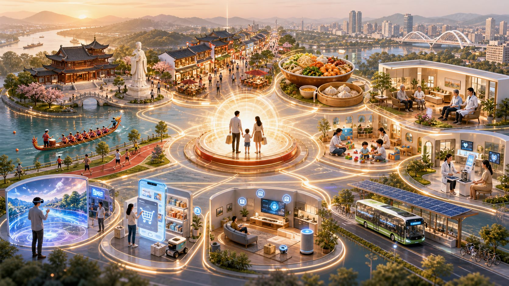
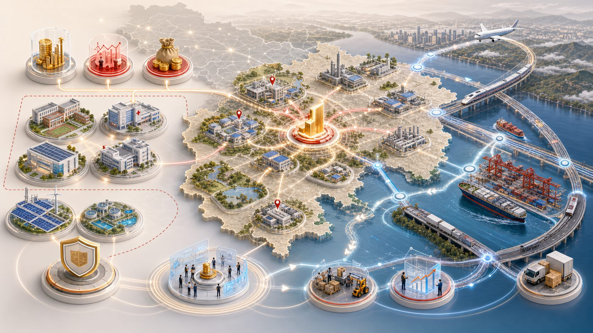

突破性发展服务消费
基础型、改善型、新型消费共同扩容，消费场景和消费环境同步优化。
第五章的逻辑，是把惠民生和促消费、投资于物和投资于人结合起来：用新需求引领新供给，用新供给创造新需求，让消费、投资和统一大市场共同释放增长潜能。
第一节扩消费，第二节强投资，第三节通市场：三者共同解决内需释放、供给升级和市场循环效率问题。
基础型、改善型、新型消费共同扩容，消费场景和消费环境同步优化。
扩大有效投资，激发民间投资活力，深化投融资体制改革。
统一制度规则、政府行为、监管执法和市场基础设施。
服务消费不仅是“多消费”，更是用高品质、多样化、智能化服务提升居民生活质量和城市消费能级。

餐饮住宿培育“一县一桌”“一县一品”，家政进社区，养老托育增加供给并推动智慧养老。
文旅娱乐、体育赛事、教育培训、居住服务共同提升体验性、互动性和品质感。
数字消费、绿色消费、健康消费共同拓展智慧商圈、数字家庭、绿色出行和互联网医疗健康。
第五章对消费的安排很细：既要打造场景、培育品牌，也要完善制度机制和消费者权益保护。
城市商业提质，“一街一主题”“一圈一热点”，景区焕新并融入沉浸式演艺、数字体验等元素。
引导优质商业资源下沉，丰富农村生活服务供给，培育首店经济、宠物经济、“谷子经济”和票根经济联盟。
持续举办“东坡庙会”“冈好购”等品牌活动，鼓励各地结合地域特色打造特色消费 IP。
清理不合理限制，推动大宗消费更新升级，推广七日无理由退货，建设放心消费公益地图。
规划把有效投资作为高质量发展的重要支撑，强调投资于物和投资于人结合，形成项目梯次推进格局。

聚焦产业转型升级、城市功能提升、基础设施短板，统筹“硬投资”和“软建设”。
鼓励民间资本参与交通、能源、水利、环保、教育、卫生、康养、城市更新等项目。
重构政府引导基金体系，推进投贷联动，拓展股权、债券、信贷等融资渠道。
这一节落实“五统一、一开放”，破除地方保护和市场分割，把规则、行为、监管和基础设施统一起来。
产权保护、市场准入负面清单、公平竞争、信用分级分类监管和信用修复。
规范地方经济促进行为，清理妨碍市场准入的做法，消除要素获取、招投标、政府采购壁垒。
落实行政裁量权基准制度，完善“信用+执法”分类监管和新业态容错机制。
推动铁水公空网衔接和多式联运，力争社会物流总费用与 GDP 比率降至 11.2%。